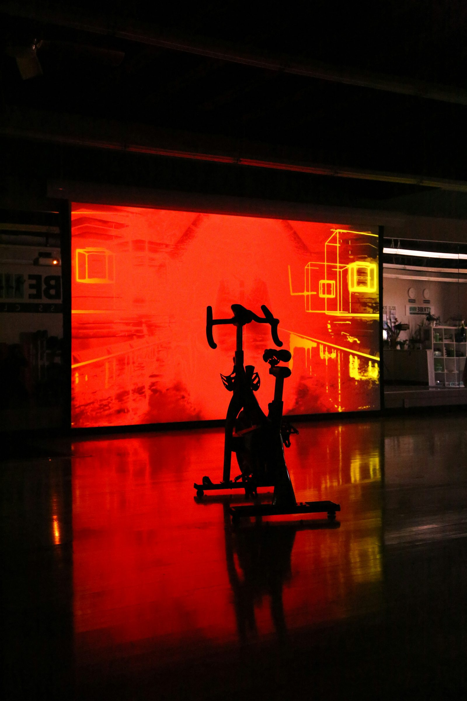
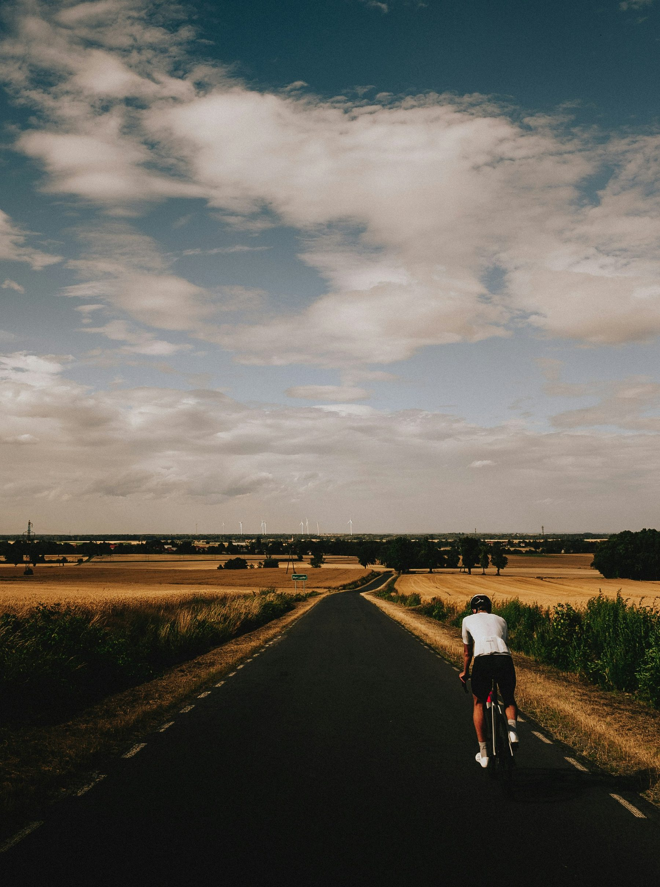
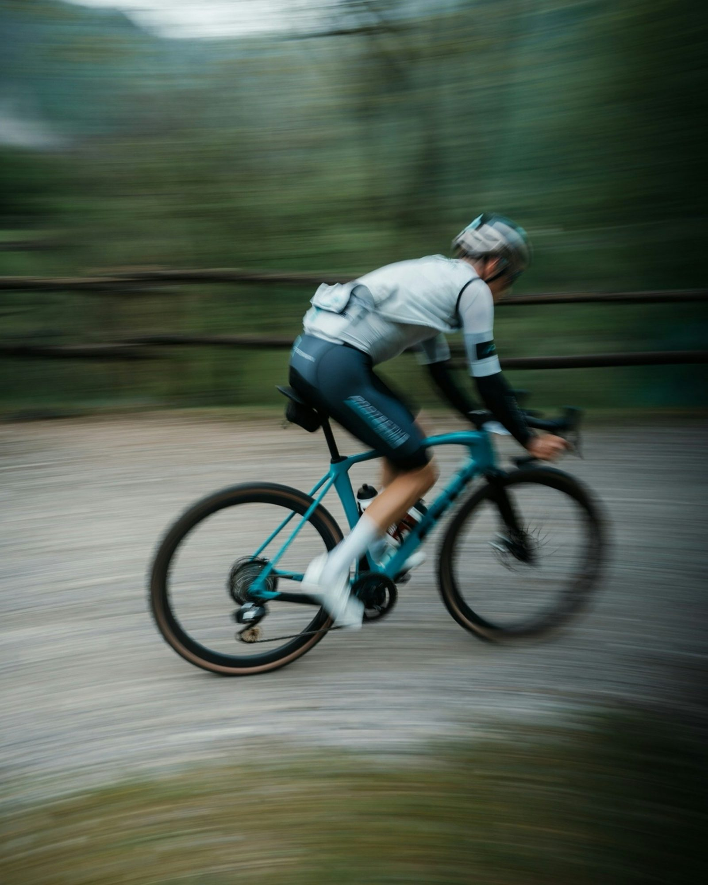
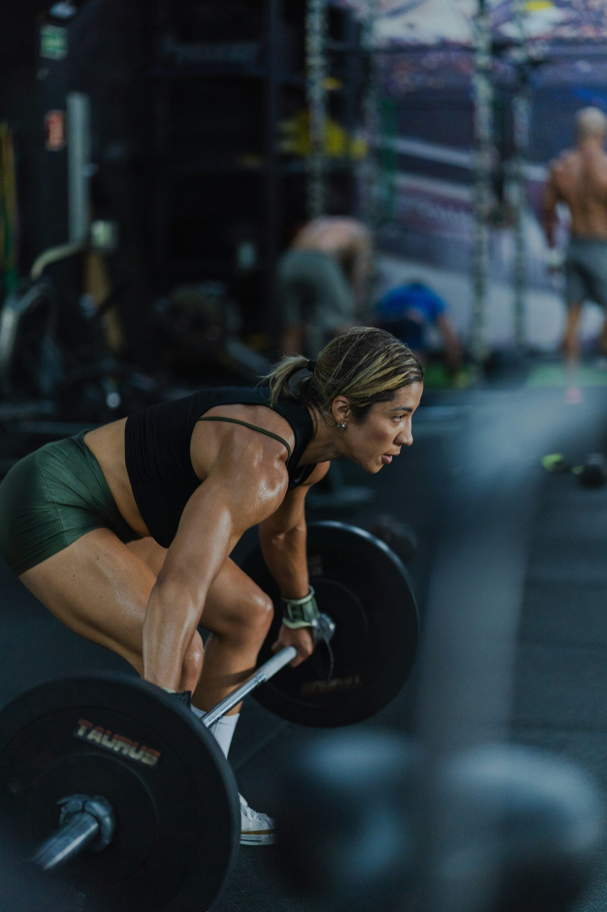

Association of British Cycling Coaches
Coaches who can read the rider, programme the work, and justify every call.
ABCC develops cycling coaches. The revised Level 3 course is a substantial new digital qualification grounded in current research; the Journal of Cycling Coaching shows the quality of thinking behind it; and the coach directory helps riders find a coach whose practice fits their goals.
Three things, one tap away
Start with the task you came to do
Whether you are considering the qualification, keeping up with the research, or looking for a coach, each route is one click from here — on desktop and on mobile.

The course
ABCC Level 3, revised
A substantial digital course for working coaches: modern physiology, strength and conditioning, and the assessment that accompanies them. See how a learner meets it.
View the student view
The journal
Journal of Cycling Coaching
A research-led publication for coaching practice. Preview the planned October 2026 issue, Foundations & Force, and its feature on strength training.
Preview Issue 04:2026
The directory
Find a verified coach
Search by discipline, region and specialism, then check each coach's qualifications and status before you make contact. See an illustrative profile.
See a sample profileSelected research insight
From the next journal issue
“Heavy resistance training improves cycling performance through three primary mechanisms: improved neuromuscular efficiency, delayed recruitment of less-efficient fibres at submaximal intensities, and increased peak sprint power.” — The Heavy Lift Returns: Why Cyclists Need Strength Training, Journal of Cycling Coaching, Issue 04:2026 (planned), Article 07.
The article reviews the evidence behind heavy strength work for cyclists, outlines a practical three-phase annual programme, and examines the “bulky and slow” concern honestly — with every claim tied to a published source.

Why it holds up
Credibility you can check
The qualification, the journal and the directory rest on foundations a prospective coach can inspect before committing to any of them.
- 11 pieces in the planned Issue 04:2026 — a Chairman's Message plus ten feature, research-review and workshop articles.
- Every article carries a source list with journal references and DOIs, so claims can be checked, not taken on trust.
- One research base shared by the journal and the revised Level 3 Modules 1 and 2 — you can read the thinking before you enrol.
Issue contents as planned on 14 May 2026; the October issue is not yet published.